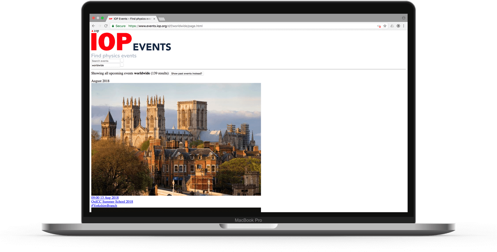

The Institute of Physics are a membership organisation aiming to help the advancement of physics. They started working with us to help them become more digitally focused as an organisation.
After running several design sprints we identified that in that we wanted to improve member engagement with events by building an events system for members. We decided to run a series of two week long development sprints based on the Scrum methodology.
We included IOP staff members in the process so they would get to grips with working in an agile way and also so they got to work through many problems alongside us that they would probably encounter in any future digital projects they took part in.
My role within these generally fell into UI/UX design, testing proposed designs with high-fidelity prototypes and then implementing the web front-end (a server-side app written in Clojure which renders down to HTML, CSS and JS).

Our first focus was on the detail pages for the events themselves. Design-wise the aim for these pages was to be clear and clean on any device. To this end they were designed mobile first and implemented to be responsive.
The other important factor was that we wanted these events to be shared a lot, so I spend a lot of time implementing all the proper metatag information used by platforms like Facebook, Twitter, etc for their page previews. We also put in a feature where anyone could quickly copy the link to these pages to their clipboard to make it faster for users to share them on whatever platforum they wanted.
Once we had the detail pages the next aim was to give them a home to live in. As the amount of future events never tended to be over 150 we decided to display them in a time sorted list and provide powerful search to let users quickly find events they were looking for.

The IOP aim to enhance physics for all so to that end we wanted to build the site in the most accessible way possible. To that end we started designing and implementing the site according to the Progressive Enhancement principles.
These state that a page must be functional as pure HTML without any styling from CSS or extra Javascript functionality. Next the page can be dressed in CSS but all its functions should work without Javascript. This ensures that even if you are in the middle of the highlands with intermitant internet the pages should still be usable. The image below shows the site loaded without CSS and JS.
During our user interviews in the design sprints we had discovered that some people who held physics events didn’t even know you could have the IOP advertise your event. Due to this we decided to let anyone add an event to the new system. We added features like ReCAPTCHA and ‘Report as Spam’ to help moderators defend again spam events.

IOP members hold a wide range of events from week long conferences to small group days out. This led to design decisions like integrating a WYSIWYG editor, custom images and tags that would let users customise their event pages to fit any kind of event.
Later sprints involving adding functionality for registration, administration controls, preparation for GDPR and further spam defence.
While including IOP staff members on a live project with us worked well we needed to record all these learnings for future IOP digital projects we aren’t building ourselves. To solve this we started work on a digital service manual for the whole organisation.

To help align designers working on future IOP digital projects I created a UI kit. This is a style guide containing both basic elements such as type, colours but also more advanced modules and flows such as navigation bars, data capture forms for different kinds of data, etc.
To avoid this becoming another document that is forgotten about, I opted to make a it a sketch file hosted on GitHub so that designers can copy elements from it into their own designs. We established a rule where new elements couldn’t be added to the kit unless they have been implemented and tested to ensure everything in the kit was of quality.